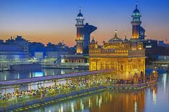

Chandigarh, the dream city of India's first Prime Minister, Sh. Jawahar Lal Nehru, was planned by the famous French architect Le Corbusier. Picturesquely located at the foothills of Shivaliks, it is known as one of the best experiments in urban planning and modern architecture in the twentieth century in India.
chandigarh
Amritsar, city, northern Punjab state, northwestern India. It lies about 15 miles (25 km) east of the border with Pakistan. Amritsar is the largest and most important city in Punjab and is a major commercial, cultural, and transportation centre. It is also the centre of Sikhism and the site of the Sikhs’ principal place of worship—the Harmandir Sahib, or Golden Temple.
Confluence of tradition and industrial evolution Ludhiana, the throbbing heart of Punjab, pulsates with a captivating symphony of rich history, thriving industry, and vibrant culture. Originally founded in 1481 on the Sutlej River banks and known for its dominant industries in the fields of manufacturing and exporting, this bustling metropolis offers a kaleidoscope of experiences for every visitor.
Ludhiana